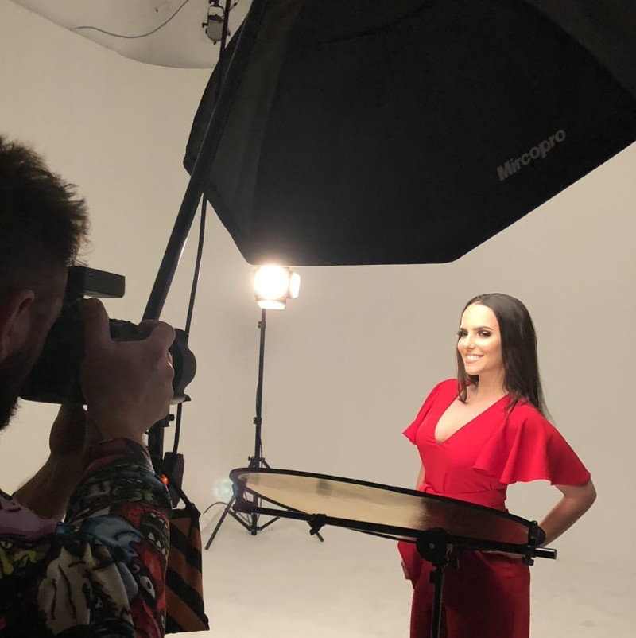

To sam ja.

Zovem se Nađa Kreculj. Živim u Beogradu, gde sam završila 13. beogradsku gimnaziju. Volim životinje, volim da idem na trčanje sa svojim psom, zaljubljenik sam u putovanja, a od hobija pišem priče, čitam i crtam. Višu ICT sam upisala 2021. godine u nadi da ću jednog dana sa stečenim znanjem moći da se bavim programerskim poslom. Osim ovoga, zanima me istorija, menadžment i ekonomija.